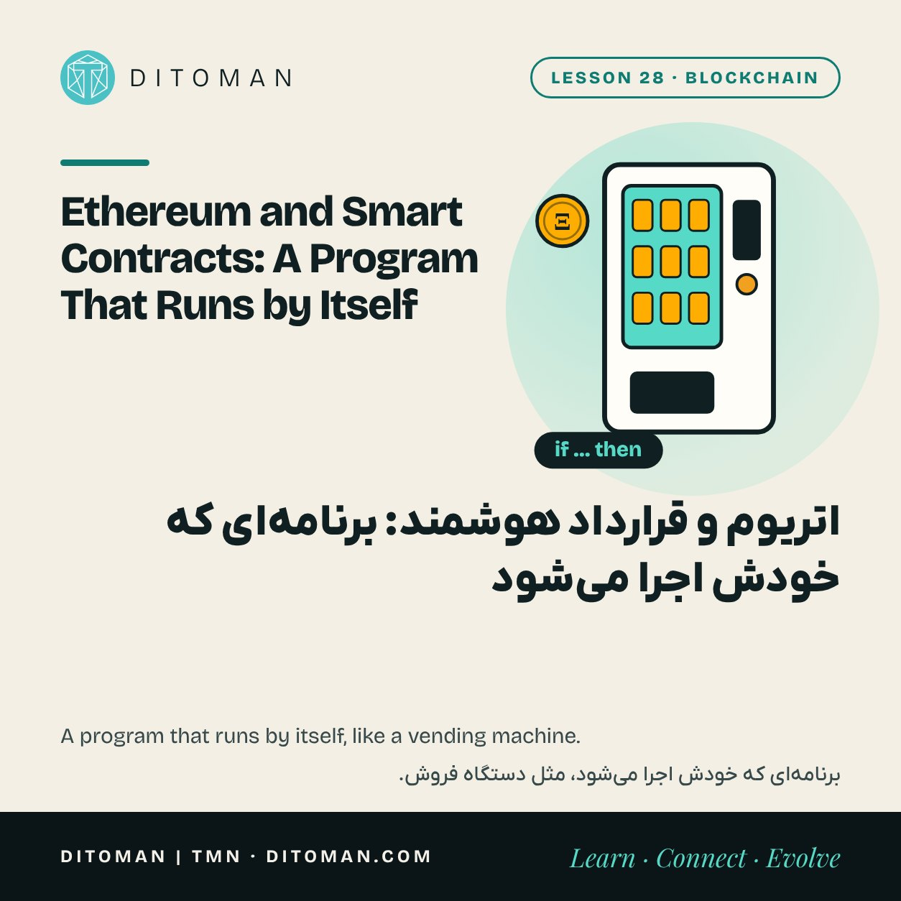
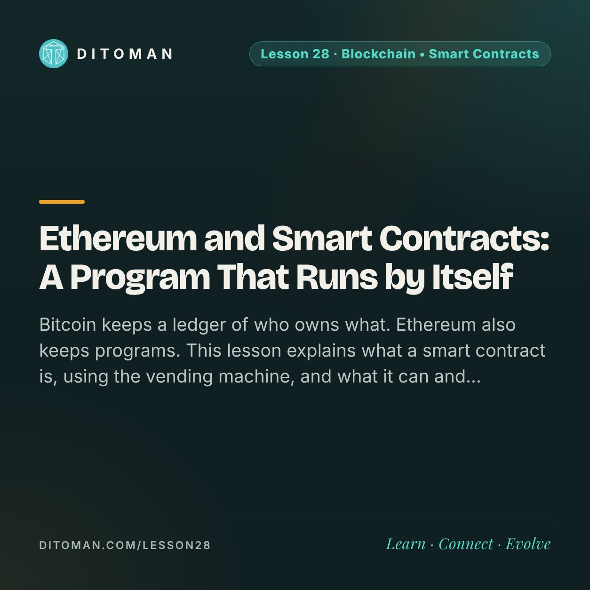

以太坊与智能合约：自己运行的程序
اتریوم و قرارداد هوشمند: برنامهای که خودش اجرا میشود
比特币保存一本记录谁拥有什么的账本。以太坊还保存程序。本课用自动售货机解释什么是智能合约，以及它能做什么、不能做什么。
بیتکوین دفتری از اینکه چه کسی مالک چیست نگه میدارد. اتریوم برنامهها را هم نگه میدارد. این درس با مثال دستگاه فروش خودکار توضیح میدهد قرارداد هوشمند چیست و چه میتواند و چه نمیتواند.
课程内容
محتوای درس
可用英文或波斯文阅读本课。
درس را به فارسی یا انگلیسی بخوانید.
你往自动售货机里投一枚硬币，按下 B4。没有人检查你的请求，也没有人能说服机器给你两份零食。条件满足，它就出货。不满足，它什么也不做。
这台小机器是对智能合约最好的写照。
01. 什么是智能合约
以太坊自己的文档说，智能合约就是运行在以太坊区块链上的程序。它是一组代码（称为函数）和数据（称为状态），位于链上的一个特定地址。
自动售货机的比喻也出自那里，该页面把它归功于计算机科学家尼克·萨博（Nick Szabo）：也许是对智能合约最好的比喻。
02. 为什么叫“智能”
它并不聪明，而是自动的。这个名字的意思是规则被写成代码，并严格按照所写运行，不论谁来调用。
- 1有人发送一笔付款和一个请求
- 2合约的代码检查规则
- 3如果规则满足，就更新状态
- 4网络为所有人记录结果
03. 实际中是什么样子
设想一个简单的合约：“如果发送者支付了价格，就给他一张票，并记录这张票是他的。”没有收银员。网络检查付款，程序更新记录。
同样的想法可以用来持有一个共同的储蓄池、两种货币之间的兑换，或者一次投票。
04. 它存放在哪里
合约被部署到区块链上，从此它像一个账户一样位于某个地址。任何人都可以调用它的函数。因为许多计算机在运行它，结果不依赖于某一家公司保持诚实或在线。
05. 一旦部署，就很难更改
以太坊的文档说，合约一旦部署，任何用户都不能控制它，而且默认情况下它不能被删除。这既是它的优势，也是风险。一条不能更改的规则带来信任。一个不能更改的错误也会一直存在。
这就是为什么谨慎的项目会公开选择它们的权限设置。例如，就 TMN 而言，代币合约的所有者已被放弃（renounced），这意味着一个用于更改规则的中央开关被刻意移除了。
06. 合约不能做什么
合约只知道链上有什么。它不能自己读报纸或查天气；来自外部的信息必须被带进来。而且它无法修复一个糟糕的想法：严格按字面执行的代码仍可能做出不明智的事。
07. 运行的成本
每个动作都需要计算，用户要支付手续费，在以太坊上称为 gas。简单的操作花费少；复杂的花费多。
08. 为什么这很重要
没有智能合约，就不会有建立在以太坊上的代币，这也是下一课要讲的内容。
本课要点
智能合约是存储在区块链上的程序：位于某个地址的代码加数据。
自动售货机是经典的画面：规则满足，结果交付，没有收银员。
一旦部署，没有用户能控制它，默认情况下也不能被删除。
它只知道链上有什么。
“智能”的意思是自动，而不是聪明。
یک سکه در دستگاه فروش خودکار میاندازید و B4 را میزنید. هیچکس درخواستتان را بررسی نمیکند و هیچکس نمیتواند دستگاه را متقاعد کند دو تنقلات به شما بدهد. اگر شرطها برقرار باشد، تحویل میدهد. اگر نه، کاری نمیکند.
این دستگاه کوچک بهترین تصویر قرارداد هوشمند است.
۰۱. قرارداد هوشمند چیست
مستندات خود اتریوم میگوید قرارداد هوشمند صرفاً برنامهای است که روی بلاکچین اتریوم اجرا میشود. مجموعهای از کد، به نام توابع، و داده، به نام وضعیت، است که در یک نشانی مشخص روی زنجیره قرار دارد.
مقایسه با دستگاه فروش هم از همانجاست و صفحه آن را به نیک سابو، دانشمند رایانه، نسبت میدهد: شاید بهترین استعاره برای قرارداد هوشمند.
۰۲. چرا «هوشمند» است
باهوش نیست؛ خودکار است. اسم یعنی قواعد به شکل کد نوشته شدهاند و دقیقاً همانطور که نوشته شدهاند اجرا میشوند، هر که صدایشان بزند.
- ۱کسی پرداخت و درخواست میفرستد
- ۲کد قرارداد قواعد را بررسی میکند
- ۳اگر قواعد برقرار باشد، وضعیت بهروز میشود
- ۴شبکه نتیجه را برای همه ثبت میکند
۰۳. در عمل چه شکلی است
قرارداد سادهای را تصور کنید: «اگر فرستنده قیمت را بپردازد، یک بلیت به او بده و ثبت کن که بلیت مال اوست.» صندوقداری در کار نیست. شبکه پرداخت را بررسی میکند و برنامه ثبت را بهروز میکند.
همین ایده میتواند یک قلک مشترک، مبادلهی دو نوع پول یا یک رأیگیری را نگه دارد.
۰۴. کجا زندگی میکند
قرارداد روی بلاکچین مستقر میشود و از آن به بعد مثل یک حساب در یک نشانی مینشیند. هر کسی میتواند توابعش را صدا بزند. چون رایانههای زیادی اجرایش میکنند، نتیجه به صداقت یا آنلاینماندن یک شرکت بستگی ندارد.
۰۵. بعد از استقرار تغییرش سخت است
مستندات اتریوم میگوید وقتی قرارداد مستقر شد، هیچ کاربری کنترلش نمیکند و بهطور پیشفرض قابل حذف نیست. این هم قوت است و هم خطر. قاعدهای که تغییر نمیکند اعتماد میآورد. اشتباهی که تغییر نمیکند میماند.
برای همین پروژههای دقیق تنظیمات قدرت را آشکارا انتخاب میکنند. مثلاً در TMN مالکیت قرارداد توکن «رها» شده، یعنی یک کلید مرکزی برای تغییر قواعد عمداً از میان رفته است.
۰۶. قرارداد چه کارهایی نمیتواند
قرارداد فقط آنچه روی زنجیره است را میداند. خودش نمیتواند روزنامه بخواند یا آبوهوا را بررسی کند؛ اطلاعات بیرونی باید به زنجیره آورده شود. و نمیتواند ایدهی بد را درست کند: کدی که دقیقاً همان کار نوشتهشده را میکند هم باز میتواند کار نابخردانهای بکند.
۰۷. هزینهی اجرا
هر عمل محاسبه میخواهد و کاربران کارمزد میدهند که در اتریوم «گس» (gas) نام دارد. عملیات ساده کم هزینه دارند و پیچیدهها بیشتر.
۰۸. چرا مهم است
بدون قرارداد هوشمند، توکنی روی اتریوم ساخته نمیشد؛ جایی که درس بعد به آن میرود.
چه برداشتی کنیم
قرارداد هوشمند برنامهای است ذخیرهشده روی بلاکچین: کد بهعلاوهی داده در یک نشانی.
دستگاه فروش تصویر کلاسیک است: شرط برقرار، نتیجه تحویل، بدون صندوقدار.
بعد از استقرار هیچ کاربری کنترلش نمیکند و بهطور پیشفرض قابل حذف نیست.
فقط آنچه روی زنجیره است را میداند.
«هوشمند» یعنی خودکار، نه باهوش.
两节相关的课
دو درس مرتبط
第27课解释谁让链保持诚实。第29课展示智能合约使什么成为可能：代币。
درس ۲۷ توضیح میدهد چه کسی زنجیره را صادق نگه میدارد. درس ۲۹ نشان میدهد قراردادهای هوشمند چه چیزی را ممکن کردند: توکنها.
核心概念
مفاهیم کلیدی
- 智能合约
- 函数与状态
- 地址
- 部署
- Gas
- 不可篡改
- 链上数据
- قرارداد هوشمند
- تابع و وضعیت
- نشانی
- استقرار
- گس
- تغییرناپذیری
- دادهی روی زنجیره
学习目标
اهداف یادگیری
- 用一句话定义智能合约。
- 用自动售货机来解释它。
- 说明为什么已部署的合约很难更改。
- 说出合约能知道的内容的一个限制。
- 解释 gas 支付的是什么。
- قرارداد هوشمند را در یک جمله تعریف کنید.
- با دستگاه فروش آن را توضیح بدهید.
- بگویید چرا قرارداد مستقرشده سخت تغییر میکند.
- یک محدودیت در آنچه قرارداد میداند نام ببرید.
- توضیح بدهید گس بابت چه چیزی است.
测验
آزمونک
检查一下你记住了什么。答案在每道题下面。
ببین چه چیزی در ذهنت مانده. پاسخ زیر هر پرسش آمده است.
第1题
پرسش ۱
什么是智能合约？
قرارداد هوشمند چیست؟
A. 运行在区块链上的程序
الف. برنامهای که روی بلاکچین اجرا میشود
B. 律师签署的纸质协议
ب. توافق کاغذی امضاشده نزد وکیل
C. 一种银行账户
ج. نوعی حساب بانکی
正确答案：A
پاسخ درست: الف
第2题
پرسش ۲
哪种日常机器是经典的比喻？
کدام دستگاه روزمره استعارهی کلاسیک است؟
A. 自动售货机
الف. دستگاه فروش خودکار
B. 洗衣机
ب. ماشین لباسشویی
C. 打印机
ج. چاپگر
正确答案：A
پاسخ درست: الف
第3题
پرسش ۳
默认情况下，已部署的合约会怎样？
بهطور پیشفرض، قرارداد مستقرشده چه میشود؟
A. 没有用户能控制它，也不能被删除
الف. هیچ کاربری کنترلش نمیکند و حذف نمیشود
B. 它的作者可以随意编辑
ب. نویسندهاش آزادانه ویرایشش میکند
C. 一年后过期
ج. پس از یک سال منقضی میشود
正确答案：A
پاسخ درست: الف
第4题
پرسش ۴
智能合约中的“智能”是什么意思？
«هوشمند» در قرارداد هوشمند یعنی چه؟
A. 自动：规则按所写运行
الف. خودکار: قواعد همانطور که نوشته شده اجرا میشوند
B. 人工智能
ب. دارای هوش مصنوعی
C. 总是盈利
ج. همیشه سودآور
正确答案：A
پاسخ درست: الف
第5题
پرسش ۵
合约自己不能做什么？
قرارداد خودش چه کاری نمیتواند بکند؟
A. 读取天气等外部信息
الف. اطلاعات بیرونی مثل آبوهوا را بخواند
B. 保存数据
ب. داده نگه دارد
C. 拥有地址
ج. نشانی داشته باشد
正确答案：A
پاسخ درست: الف
来源
منابع
关于 TMN 所有者已放弃的说法，依据本站的代币页面。我们引用的页面没有给出该术语的创造日期，所以没有注明。一般性解释，不是对任何合约的安全审计。
بیان دربارهی رهاشدن مالکیت TMN از صفحهی توکن همین سایت میآید. صفحهی مرجع تاریخی برای ابداع این اصطلاح نمیدهد، پس تاریخی ذکر نشده. توضیح عمومی است و ممیزی امنیتی هیچ قراردادی نیست.
با هم دنبال میکنیم关注我们
新课程会首先在 Ditoman 的各个渠道发布。
درسهای تازه اول در کانالهای دیتومان معرفی میشوند.